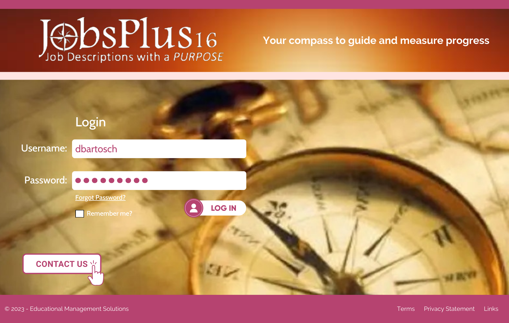

EMS App Colors

The major colors in this color scheme are triadic colors, meaning that the colors complement each other because there is equal distance between all colors on the color wheel. These 3 specific colors were chosen because they look uplifting and vibrant. They create contrast but still look pleasing to the eye. A triadic color scheme looks harmonious and balanced.
For cohesion, the complementry colors all have the same three first colors, with accents/complements of each color making up the last two.
Wireframe and Prototype 1

This first wireframe bluprint for the webpage is a basic/simple type with a graphic to one side utilizes an image for the slogan of the product.

This prototype login screen utilizes an image for the slogan of the product.
This prototype was only done in blue, but the color schemes would cohesively look the same using the other two pallets.
Wireframes and Prototypes 2

This second wireframe bluprint for the webpage is more elaborate and eye catching.
The top banner (including the product name and slogan) would carry over into the webpages as you log in, although maybe a bit smaller.

This login screen image was inspired by the ripples in EMS's logo.

I don't know anything about this product, so I didn't have an inspiriation to go with.
This login screen image was inspired by the ripples in EMS's log and has cohesion with Performance Plus.

This login screen image was inspired EMS's website for this product.
If continuity is wanted, could use a redish image like the one above with the ripples.
These images are together shown to show the color scheme of all three products.
If we come up with a 4th product, we could use a yellow theme matching this color scheme (a tetradic color scheme - again equally positioned around the color wheel as to complement each other.)